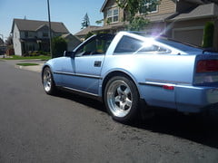

-
My struts are shot So I was thinking about cutting my springs this weekend and getting tokico or bilstein struts next pay check thursday I like that slammed flush look but want it stiff for drifting whats the cheapest way need some suggestions -
you should do it. it'll stiffen the ride up a lot.vgboost85 wrote: My struts are shot So I was thinking about cutting my springs this weekend and getting tokico or bilstein struts next pay check thursday I like that slammed flush look but want it stiff for drifting whats the cheapest way need some suggestions
a friend of mine has cut springs on his Z31 it's not the "Stiffest" but it's pretty stiff.
he gives me shit all the time about the money i spend on my car but he simply doenst understand what type of "high" you get from watching a stock car transform into something alive with as much emotion and feelings as any human.Originally posted by PurePontiacKid -
the cheapest way to do and do it right is to just do the s13 coilovers conversion, it's easy and will save you a lot of time!Sbsperformance-cylinder head service and porting specialist. Shoot me a pm for porting specials and now offering a low low price for intake manifold porting! Now offering ceramic and thermal dispersant coating! -
damn how much should I cut them? link? -
oops double post lol silly me :nanan?re
he gives me shit all the time about the money i spend on my car but he simply doenst understand what type of "high" you get from watching a stock car transform into something alive with as much emotion and feelings as any human.Originally posted by PurePontiacKid -
one and a half coils will get you this, you can only get one finger in between the tire and fender barelyvgboost85 wrote: damn how much should I cut them? link?
he gives me shit all the time about the money i spend on my car but he simply doenst understand what type of "high" you get from watching a stock car transform into something alive with as much emotion and feelings as any human.Originally posted by PurePontiacKid -
s13 coilovers ftmfw!Sbsperformance-cylinder head service and porting specialist. Shoot me a pm for porting specials and now offering a low low price for intake manifold porting! Now offering ceramic and thermal dispersant coating! -
any negitive effects from this I want to cut front and back -
Eventually ill go coilover this is just for now -
none at all only that it's a lot stiffer.vgboost85 wrote: any negitive effects from this I want to cut front and back
if you want autoX or circuit type racing don't cut them cause you'll ruin your caster.
you might hear the springs bind for a good 2 or 3 weeks just drive a lot and the springs will seat and you won't even know it was there.
he gives me shit all the time about the money i spend on my car but he simply doenst understand what type of "high" you get from watching a stock car transform into something alive with as much emotion and feelings as any human.Originally posted by PurePontiacKid -
Very confused at the lack of flames in this thread
"Beer is proof that god wants us to be happy" - Benjamin Franklin -
^^ha!<<SOLD>>
87' NA 5speed GL <-- "Gett'in Laid" (Not so much right now actually)
17" Panasport C5C2 "G7" wheels
Suspension Techniques Springs / HP Blues…
 -
I dont autox or circuit just drift and drag I still want to be able to go like 130 lmao my camber in my rear is screwed, already on the negative side will it make the Z handle like crap? I need the cons! -
The first con I can think of is that you'll be just like everyone else out there who doesn't want to spend a minimal amount of money to do the job right the first time.
The second thing is that your ride quality will probably suck.86' Turbo GLL -
Cutting the springs will lower the car and stiffen the ride up, yes. Is it the best way to accomplish that? Hell no. Is it the cheapest? Well yea, its practically free.
More importantly, which year/model springs do you have exactly? You can't just say 1.5 coils lowers the car X amount. It will vary depending on which springs you have. They don't all have the same coil count.545 RWHP & 540 RWTQOriginally posted by Andrew84zx
tell her your car is so fast it will make her panties fly off


Copyright © 2006–. All rights reserved. Privacy Policy